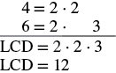
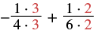

ভগ্নাংশের ক্রিয়া চেনো ও প্রয়োগ করো
উৎস-অনুগত উপবিভাগ · m81289-fs-id2145474। সম্পূর্ণ বইয়ের অনুবাদ এখনও চলছে। গাণিতিক চিহ্ন, সংখ্যা ও মূল কাঠামো অক্ষুণ্ণ; প্রযোজ্য ক্ষেত্রে সূত্রের শব্দলেবেল বাংলায় অনূদিত। মূল ছবির ভিতরের ইংরেজি লেবেলের অর্থ বাংলা বিবরণে আছে। স্বাধীন শিক্ষক ও ভাষা-পর্যালোচনা বাকি। অন্য উপবিভাগের উৎস-লিঙ্কে ইন্টারনেট প্রয়োজন।
ভগ্নাংশের ক্রিয়া চেনো ও প্রয়োগ করো
এই অধ্যায়ে এতক্ষণ তুমি ভগ্নাংশের গুণ, ভাগ, যোগ ও বিয়োগ অনুশীলন করেছ। নিচে এই চারটি গাণিতিক ক্রিয়ার সারাংশ দেওয়া হল। মনে রেখো, ভগ্নাংশ যোগ বা বিয়োগ করতে হর এক করতে হয়, কিন্তু গুণ বা ভাগ করতে তা লাগে না। প্রতিটি ভগ্নাংশের হর শূন্য নয়; ভাগের ক্ষেত্রে ভাজকও শূন্য হতে পারে না। এখানে লঘিষ্ঠ সাধারণ হর নির্ণয়ের সময় হরগুলিকে ধনাত্মক পূর্ণসংখ্যা ধরা হচ্ছে।
অনুশীলন · এই প্রশ্নের লিঙ্ক
- ⓐ
- ⓑ
সমাধান
প্রথমে নিজেকে জিজ্ঞাসা করো, ‘এখানে কোন ক্রিয়া করতে হবে?’
ⓐ এখানে যোগ করতে হবে।
ভগ্নাংশগুলির হর কি এক? না।
| লঘিষ্ঠ সাধারণ হর নির্ণয় করো।  প্রথম সারিতে ৪ সমান ২ গুণ ২। দ্বিতীয় সারিতে ৬ সমান ২ গুণ ৩। দুই সারির একটি করে ২ একই স্তম্ভে আছে। রেখার নীচে লঘিষ্ঠ সাধারণ হর সমান ২ গুণ ২ গুণ ৩; পরের সারিতে লঘিষ্ঠ সাধারণ হর সমান ১২। ছবির ইংরেজি এলসিডি সংক্ষিপ্ত রূপটি লঘিষ্ঠ সাধারণ হর বোঝায়। ১২ হল হর ৪ ও ৬-এর লঘিষ্ঠ সাধারণ গুণিতক। |
|
| লঘিষ্ঠ সাধারণ হর নিয়ে প্রতিটি ভগ্নাংশকে সমতুল ভগ্নাংশে লেখো। |  একটি ঋণাত্মক ভগ্নাংশের সঙ্গে একটি ধনাত্মক ভগ্নাংশের যোগ। প্রথম ভগ্নাংশের বাইরে ঋণাত্মক চিহ্ন আছে; তার লব ১ গুণ ৩ এবং হর ৪ গুণ ৩। যোগচিহ্নের পরে দ্বিতীয় ভগ্নাংশের লব ১ গুণ ২ এবং হর ৬ গুণ ২। প্রথমটির লব ও হরে নতুন গুণনীয়ক ৩, আর দ্বিতীয়টির লব ও হরে নতুন গুণনীয়ক ২ লাল রঙে দেখানো। এতে দুই হরই ১২ হয়, ভগ্নাংশের মান অপরিবর্তিত থাকে। |
| লব ও হরের গুণগুলি করো। | |
| চিহ্নসহ লবগুলি যোগ করো। যোগফলকে লবে লেখো, আর একই হর রাখো। | |
| দেখো, উত্তরকে আরও লঘিষ্ঠ আকারে প্রকাশ করা যায় কি না। যায় না; ১ ছাড়া লব ও হরের আর কোনো ধনাত্মক সাধারণ গুণনীয়ক নেই। |
ⓑ এখানে ভাগ করতে হবে। হর এক করার দরকার নেই।
| ভগ্নাংশ ভাগ করতে প্রথম ভগ্নাংশকে দ্বিতীয় ভগ্নাংশের গুণাত্মক বিপরীত দিয়ে গুণ করো। দ্বিতীয় ভগ্নাংশের লব ১ ও হর ৬ বদলে লব ৬ ও হর ১ হয়। | |
| গুণ করো। ঋণাত্মক সংখ্যাকে ধনাত্মক সংখ্যা দিয়ে গুণ করলে গুণফল ঋণাত্মক হয়। | |
| লব ও হরকে ২ দিয়ে ভাগ করে লঘিষ্ঠ আকারে প্রকাশ করো। ঋণাত্মক চিহ্ন বজায় রাখো। |
অনুশীলন · এই প্রশ্নের লিঙ্ক
- ⓐ
- ⓑ
সমাধান
ⓐ এখানে বিয়োগ করতে হবে। ভগ্নাংশগুলির হর এক নয়।
| লঘিষ্ঠ সাধারণ হর ৩০ নিয়ে প্রতিটি ভগ্নাংশকে সমতুল ভগ্নাংশে লেখো। প্রথম ভগ্নাংশের লব ও হরকে ৫ দিয়ে, আর দ্বিতীয়টির লব ও হরকে ৩ দিয়ে গুণ করো। | |
| প্রথম লব থেকে দ্বিতীয় লব বিয়োগ করো। বিয়োগফলকে লবে লেখো, আর একই হর রাখো। ২৫ গুণ এক্স এবং ৯ সদৃশ পদ নয়, তাই লবটি ওই বিয়োগের রাশি হিসেবেই রাখো। |
ⓑ এখানে গুণ করতে হবে। হর এক করার দরকার নেই।
| ভগ্নাংশ গুণ করতে লবগুলিকে গুণ করো এবং হরগুলিকে গুণ করো। | |
| লব ও হরকে গুণনীয়কে ভেঙে সাধারণ গুণনীয়কগুলি দেখাও। একই ৫ ও একই ৩ লব ও হর উভয়ের গুণনীয়ক। | |
| লব ও হর উভয়কে একই সাধারণ গুণনীয়ক ৫ ও ৩ দিয়ে ভাগ করে লঘিষ্ঠ আকারে প্রকাশ করো। কেবল গুণনীয়ক কাটা যায়; যোগ বা বিয়োগের আলাদা পদ এভাবে কাটা যায় না। |